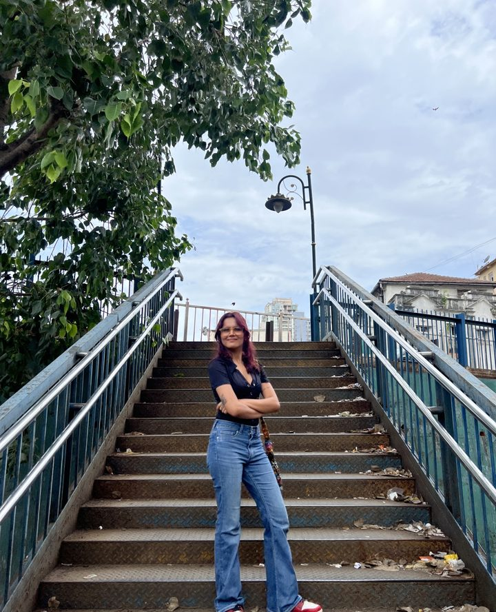

Vol. 01 · Mumbai · 2026
Portfolio
Recipes from the kitchen of
Hemangi Ganatra
Packaging · Identity · Advertising · Copy
This book belongs to Hemangi Ganatra
If found, please return to the chef.
Reward: one iced coffee.
The
chef
1
Fig. 1 — The chef

Hemangi Ganatra. Mumbai, 2026. Graphic designer, packaging nerd, judge of menus. Pictured here probably holding coffee.
2A note from the chef
Hi. I'm Hemangi.
I'm a graphic designer who somehow ended up with feelings all over her work, and honestly? Not complaining.
This is my recipe book. Most of what's in it started with something I've lived, felt, or found deeply annoying. I figured out I was serious about packaging during an internship: something about holding a thing you made with your hands and thinking, yeah, that's it.
I cook where design meets writing: packaging, brand identity, advertising and copy. Sometimes all four in one dish, which is chaotic and also my favourite.
Junior Graphic Designer at SMDB. Studying Visual Communication at Ecole Intuit Lab, Mumbai.
— Hemangi
3Contents
- The chef
- Fig. 1, in the pocketp.2
- A note from the chefp.3
- Main dishes
- Shake Ko Bulaop.6
- Oak & Awep.10
- Other
- Still in the kitchenp.14
- Say hip.16
Main
dishes
5
Recipe 04 · Main dish
Shake Ko Bulao
A milkshake brand where the names do the work.
Serves
Six personalities
Course
Main
Cooked with
Copy first
Ingredients
- Brand identity
- Packaging
- Copywriting, as the main flavour
[01] Start with words. The brief: build a milkshake brand with copywriting as the main design direction.
[02] Name each shake like a person, not a product. Each name does the work before the design even starts.
Six flavours, six personalities.
Gulaborose Paan Patakapaan Aam Kahanimango Rang Rasiyathandai Shaant Shahipista elaichi Shahi Swaadkesar badam
8Let every label say who ordered it.
Chef's note
“You already know exactly who ordered that shake.”9
Recipe 05 · Main dish
Oak & Awe
An Armenian brandy for the generation that wasn't supposed to drink it.
Serves
Under-30s
Course
Main
Origin
Armenia
Ingredients
- Armenian folk patterns
- Deep burgundy & gold
- Bold symmetry, one hand-assembled box
[01] The brief: we were each given a country and had to design an alcohol bottle for it. I got Armenia.
[02] Go deep into Armenian geometric folk patterns, the kind on carpets and church walls, and build the brand from that visual language.
Know what you're fixing.
Brandy sits on your dad's shelf and comes out at funerals.
Nobody under 30 thinks it's for them. It's serious in a way that feels uninviting.
12Season with burgundy, gold and symmetry. Assemble by hand into a real prototype.
Chef's note
“The goal wasn't to make brandy look young. It was to make it look worth keeping.”13
Still in the kitchen
- Zine Starter
- Wear Your Race Main
- Drop the Label Main
- Kiss Her, You Fool Side
- Ganatra Foods Dessert
Coming in the next edition.
14Other
15Say hi.
The kitchen is open for orders.
Step 1
Copy my email
ganatrahemangi93@gmail.comStep 2
Send the brief
Packaging, a brand, an ad, or a strong opinion about a label.
Written & cooked by hand.
- Chef
- Hemangi Ganatra
- Kitchen
- Ecole Intuit Lab, Mumbai
- Edition
- Project 03 · Personal Branding & Portfolio
- Type
- Libre Caslon & Space Mono
Notes
Thanks for making it to the end.
Still going for the wow, same.
Always.
— H.
18